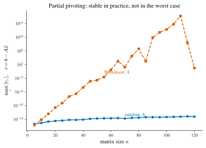
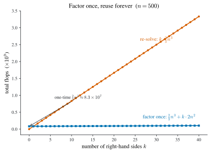
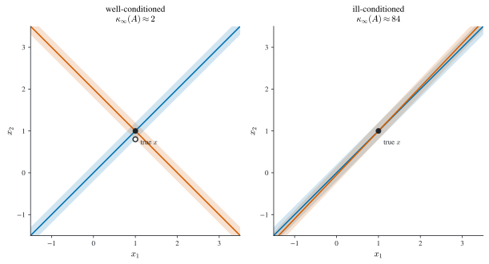
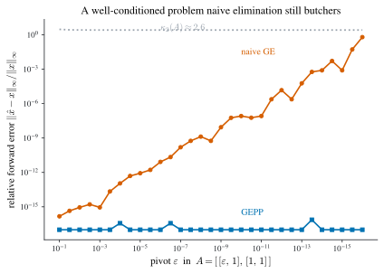

4 Direct Methods for Linear Systems
\[ \newcommand{\R}{\mathbb{R}} \newcommand{\C}{\mathbb{C}} \newcommand{\N}{\mathbb{N}} \newcommand{\E}{\mathbb{E}} \newcommand{\eps}{\varepsilon} \newcommand{\abs}[1]{\left\lvert #1 \right\rvert} \newcommand{\norm}[1]{\left\lVert #1 \right\rVert} \newcommand{\ninf}[1]{\left\lVert #1 \right\rVert_{\infty}} \newcommand{\ntwo}[1]{\left\lVert #1 \right\rVert_{2}} \newcommand{\none}[1]{\left\lVert #1 \right\rVert_{1}} \newcommand{\inner}[2]{\left\langle #1,\, #2 \right\rangle} \newcommand{\bigO}{\mathcal{O}} \newcommand{\dd}{\mathrm{d}} \newcommand{\diff}[2]{\frac{\mathrm{d} #1}{\mathrm{d} #2}} \newcommand{\pdiff}[2]{\frac{\partial #1}{\partial #2}} \newcommand{\spec}{\rho} \newcommand{\cond}{\kappa} \newcommand{\Span}{\operatorname{span}} \newcommand{\rank}{\operatorname{rank}} \newcommand{\tr}{\operatorname{tr}} \newcommand{\diag}{\operatorname{diag}} \newcommand{\argmax}{\operatorname*{arg\,max}} \newcommand{\argmin}{\operatorname*{arg\,min}} \newcommand{\defeq}{:=} \]
Almost every numerical problem eventually reduces to solving a linear system \(Ax=b\): the tridiagonal system for the cubic spline of Definition 1.3, the normal equations of least squares (Chapter 6), the Jacobian solve inside an implicit ODE step (Chapter 3). This chapter develops the direct methods, those that produce the exact answer in finitely many arithmetic operations, up to round-off, starting from Gaussian elimination and refining it into the factorizations (\(PA=LU\), Cholesky, tridiagonal \(LU\)) that make solving fast, reusable, and, with pivoting, numerically safe. The iterative methods, which trade exactness for cheap approximate solves on large sparse systems, are the subject of Chapter 5.
Throughout, \(A=(a_{ij})\in\R^{n\times n}\) is the coefficient matrix, \(b\in\R^n\) the right-hand side, and \(x\in\R^n\) the unknown, with row \(j\) of \(A\) standing for the equation \(E_j\) and column \(k\) for the variable \(x_k\).
4.1 Gaussian elimination
The schoolbook method for a linear system uses two elementary operations that leave the solution set unchanged: adding a multiple of one equation to another, \((E_i+\lambda E_j)\to (E_i)\), and swapping two equations, \((E_i)\leftrightarrow(E_j)\). Gaussian elimination applies the first systematically to drive the system to upper-triangular form, which is then solved by back-substitution.
Take the \(2\times2\) case to fix the pattern. With \(a_{11}\ne 0\), the multiplier \(\ell=a_{21}/a_{11}\) makes \((E_2-\ell E_1)\to(E_2)\) eliminate \(x_1\): \[ a_{22}\leftarrow a_{22}-\ell\,a_{12},\qquad b_2\leftarrow b_2-\ell\,b_1, \] after which the system is triangular and \[ x_2=\frac{b_2}{a_{22}},\qquad x_1=\frac{b_1-a_{12}x_2}{a_{11}}. \] For general \(n\) the same step is repeated column by column. At stage \(s\) the entries below the diagonal in column \(s\) are cleared using row \(s\) as the pivot row and \(a_{ss}\) as the pivot.
Given \(A\in\R^{n\times n}\), \(b\in\R^n\). For \(s=1,2,\dots,n-1\), and for each \(j=s+1,\dots,n\): \[ a_{jk}\leftarrow a_{jk}-\frac{a_{js}}{a_{ss}}\,a_{sk}\ \ (s+1\le k\le n), \qquad b_j\leftarrow b_j-\frac{a_{js}}{a_{ss}}\,b_s . \] The array now holds an upper-triangular \(U\) and a modified \(b\). Back-substitute: for \(s=n,n-1,\dots,1\), \[ x_s=\frac{b_s-\sum_{k=s+1}^{n}a_{sk}x_k}{a_{ss}}. \]
The algorithm breaks down the moment a pivot \(a_{ss}\) vanishes, because the multiplier \(a_{js}/a_{ss}\) divides by zero. This is not a rare pathology: a perfectly nonsingular system can produce a zero pivot midway through elimination. For instance, \[ \begin{aligned} E_1&: x_1 - x_2 + 2x_3 - x_4 = -8, & E_2&: 2x_1 - 2x_2 + 3x_3 - 3x_4 = -20,\\ E_3&: x_1 + x_2 + x_3 = -2, & E_4&: x_1 - x_2 + 4x_3 + 3x_4 = 4, \end{aligned} \] after eliminating \(x_1\) leaves \(E_2\) in the form \(-x_3-x_4=(\cdots)\) with no \(x_2\) term: the pivot in column \(2\) is zero. Swapping \(E_2\leftrightarrow E_3\) brings a nonzero coefficient into the pivot position, and elimination continues to the solution \(x=(-7,3,2,2)^\top\). Row swaps are therefore not optional; they are part of the method. Deciding which row to swap in is the subject of pivoting.
4.2 Partial and complete pivoting
Even when \(a_{ss}\ne 0\), a small pivot is dangerous. Dividing by a pivot close to zero amplifies the round-off already present in the entries above it, and the computed solution can be badly wrong even though the system is well posed (Figure 4.4 makes this failure, and its cure, quantitative). The cure is to swap into the pivot position the equation with the largest available coefficient.
For \(s=1,2,\dots,n-1\):
- Pivot search. Choose the row of largest magnitude in column \(s\) at or below the diagonal, \[ \mathrm{piv}\defeq\argmax_{s\le j\le n}\abs{a_{js}}, \] and swap \(E_s\leftrightarrow E_{\mathrm{piv}}\).
- Eliminate. For \(j=s+1,\dots,n\), form \(\ell_{js}=a_{js}/a_{ss}\) and \[ a_{jk}\leftarrow a_{jk}-\ell_{js}\,a_{sk}\ (s+1\le k\le n),\qquad b_j\leftarrow b_j-\ell_{js}\,b_s . \]
Because the pivot is now the largest entry in its column, every multiplier satisfies \(\abs{\ell_{js}}=\abs{a_{js}/a_{ss}}\le 1\), so elimination never magnifies an entry by more than a bounded factor per step. Partial pivoting also guarantees that a nonsingular matrix always supplies a nonzero pivot, so GEPP runs to completion for any nonsingular \(A\).
Partial pivoting keeps the multipliers bounded, but it does not bound the growth of the matrix entries in the worst case. Measure that growth by the growth factor \[ \rho\defeq\frac{\max_{i,j,s}\abs{a_{ij}^{(s)}}}{\max_{i,j}\abs{a_{ij}}}, \] the largest entry appearing at any elimination stage \(s\) relative to the largest entry of the original \(A\); the round-off in the computed solution is proportional to \(\rho\). For the Wilkinson matrix \[ A=\begin{pmatrix} 1 & & & & 1\\ -1 & 1 & & & 1\\ -1 & -1 & 1 & & 1\\ \vdots & & \ddots & & \vdots\\ -1 & -1 & \cdots & -1 & 1 \end{pmatrix}, \] GEPP performs no swaps yet the trailing entries double at every step, so the largest entry of \(U\) reaches \(2^{\,n-1}\) and \(\rho=2^{\,n-1}\). The residual \(r=b-A\hat x\) of the computed solution then grows exponentially in \(n\) (Figure 4.1), even though the problem is not that sensitive. Complete pivoting removes this growth: its factor is provably far milder, and is observed to sit near \(\rho\approx n\) in practice. Partial pivoting is stable in practice and unstable only in the worst case.

solve) as the size \(n\) grows. For a generic random \(A\) the residual stays near machine precision; for the Wilkinson matrix the \(2^{\,n-1}\) growth factor drives it up exponentially, evidence that partial pivoting alone is not worst-case stable.
Complete pivoting removes even this worst-case growth by searching the entire remaining submatrix, not just one column: choose \[ (\mathrm{ip},\mathrm{jp})\defeq\argmax_{s\le i,j\le n}\abs{a_{ij}}, \] swap row \(s\leftrightarrow \mathrm{ip}\) and column \(s\leftrightarrow \mathrm{jp}\) (the column swap permutes the unknowns and must be undone at the end), then eliminate. Searching an \((n-s+1)^2\) block at every stage costs \(\bigO(n^3)\) comparisons overall, comparable to the arithmetic itself, so complete pivoting is generally too expensive to be worthwhile. In practice partial pivoting is the default, with the Wilkinson example standing as a reminder that “stable in practice” is not the same as “provably stable.”
4.3 Cost of Gaussian elimination
To compare methods we count floating-point additions and multiplications, ignoring comparisons, index arithmetic, and memory traffic. The work concentrates in the elimination sweep.
Theorem 4.1 (Operation count of Gaussian elimination) Solving a single system \(Ax=b\) by Gaussian elimination (with or without partial pivoting) costs \[ \tfrac23 n^3+\bigO(n^2) \] multiplications and additions: \(\tfrac23 n^3\) for the elimination and \(\bigO(n^2)\) for back-substitution.
Proof. At stage \(s\) the elimination updates the \((n-s)\times(n-s)\) trailing block of \(A\), each entry costing one multiplication and one subtraction, plus \(n-s\) multiplier divisions and the \(n-s\) right-hand-side updates. Summing the dominant block-update term, \[ \sum_{s=1}^{n-1} 2(n-s)^2=2\sum_{m=1}^{n-1} m^2=2\cdot\frac{(n-1)n(2n-1)}{6}=\frac23 n^3+\bigO(n^2), \] using \(\sum_{k=1}^{N}k^2=\tfrac16 N(N+1)(2N+1)\). The multiplier and right-hand-side work, \(\sum_s (n-s)\) and \(\sum_s 2(n-s)\), are each \(\bigO(n^2)\). Back-substitution costs \(\sum_{s=1}^{n}2(n-s)=n^2+\bigO(n)\). The cubic term therefore comes entirely from elimination. \(\square\)
The lopsided split (\(\bigO(n^3)\) to triangularize but only \(\bigO(n^2)\) to back-substitute) is the key economic fact of the whole chapter. If we must solve several systems with the same matrix \(A\) but different right-hand sides, we should triangularize \(A\) once and reuse the result. Storing the elimination as a factorization is exactly what makes that reuse possible, and it is where we turn next.
Figure 4.2 makes the payoff concrete. Solving \(k\) systems from scratch costs \(k\cdot\tfrac23 n^3\), a line whose slope is the full factorization cost; factoring once and reusing the result costs \(\tfrac23 n^3\) up front and only \(2n^2\) per additional right-hand side, a line so shallow it is nearly flat on the same axes. At \(n=500\) the one-time factorization is \(\tfrac23 n^3\approx 8.3\times10^{7}\) flops while each extra solve is \(2n^2=5\times10^{5}\), over a hundred times cheaper.

4.4 Matrix algebra
Elimination is cleanest to reason about in matrix language, so we record the algebra we need. For \(A,B\in\R^{n\times m}\) and scalars \(\alpha,\beta\), the linear combination \(\alpha A+\beta B\) is formed entrywise. The matrix–vector product \(Ax\in\R^n\) has \(j\)-th component the dot product of row \(j\) of \(A\) with \(x\), \[ (Ax)_j=\sum_{k=1}^{m}a_{jk}x_k, \] so the system of equations is precisely \(Ax=b\). The matrix–matrix product of \(A\in\R^{n\times m}\) and \(B\in\R^{m\times p}\) is defined column by column, \(AB=(Ab_1\ \cdots\ Ab_p)\), giving the entrywise formula \[ (AB)_{jk}=\sum_{i=1}^{m}a_{ji}b_{ik}. \] The single algebraic fact elimination leans on is associativity.
Theorem 4.2 (Associativity of matrix multiplication) For \(A\in\R^{n\times m}\), \(B\in\R^{m\times p}\), \(C\in\R^{p\times k}\), \(A(BC)=(AB)C\).
Proof. Expand the \((s,t)\) entry and exchange the two finite sums: \[ \bigl(A(BC)\bigr)_{st}=\sum_{i=1}^{m}a_{si}\!\sum_{j=1}^{p}b_{ij}c_{jt} =\sum_{j=1}^{p}\Bigl(\sum_{i=1}^{m}a_{si}b_{ij}\Bigr)c_{jt} =\sum_{j=1}^{p}(AB)_{sj}c_{jt}=\bigl((AB)C\bigr)_{st}.\ \square \]
Several special matrices recur: the identity \(I\); a diagonal matrix \(D=\diag(d_1,\dots,d_n)\); upper- and lower-triangular matrices \(U\) (entries \(u_{jk}=0\) for \(j>k\)) and \(L\) (\(\ell_{jk}=0\) for \(j<k\)); a unit lower-triangular matrix additionally has \(\ell_{jj}=1\). The transpose \(A^\top=(a_{ji})\) obeys \((A^\top)^\top=A\) and \((AB)^\top=B^\top A^\top\).
A square \(A\) is nonsingular if there is a matrix \(A^{-1}\) with \(AA^{-1}=A^{-1}A=I\); otherwise it is singular. When \(A^{-1}\) exists it is unique, \((A^{-1})^{-1}=A\), \((AB)^{-1}=B^{-1}A^{-1}\), and \((A^{-1})^\top=(A^\top)^{-1}\). It is tempting to solve \(Ax=b\) as \(x=A^{-1}b\), but \(A^{-1}\) is rarely available and is more expensive to obtain than \(x\) itself: computing it means solving \(AX=I\), i.e. \(Ax_j=e_j\) for each standard basis vector \(e_j\), which is \(n\) systems with the same matrix \(A\). This is precisely the situation the factorization viewpoint is built to exploit: never invert a matrix to solve a system.
Determinant via elimination
The determinant \(\det(A)\) can be expanded along any row or column by cofactors, but the cheap way to compute it is to read it off from elimination, using three facts: swapping two rows negates it, \(\det(A_e)=-\det(A)\); adding a multiple of one row to another leaves it unchanged; and for a triangular matrix it is the product of the diagonal. Since GEPP reduces \(A\) to an upper-triangular \(U\) using only these operations, \[ \det(A)=(-1)^{\#\text{ row swaps}}\prod_{j=1}^{n}u_{jj}, \] a byproduct of an elimination we were doing anyway, at no extra asymptotic cost. In particular \(\det(A)\ne 0\) iff every \(u_{jj}\ne0\) iff \(Ax=b\) has a unique solution. Standard consequences are \(\det(A^\top)=\det(A)\), \(\det(AB)=\det(A)\det(B)\), and \(\det(A^{-1})=\det(A)^{-1}\).
4.5 LU factorization
Return to elimination without pivoting and watch what the multipliers record. The first stage subtracts \(\ell_{j1}=a_{j1}/a_{11}\) times row \(1\) from row \(j\); in matrix form this is exactly \[ A=\begin{pmatrix}1&&&\\ \ell_{21}&1&&\\ \vdots&&\ddots&\\ \ell_{n1}&&&1\end{pmatrix} \begin{pmatrix}a_{11}&a_{12}&\cdots&a_{1n}\\ 0&a'_{22}&\cdots&a'_{2n}\\ \vdots&\vdots&\ddots&\vdots\\ 0&a'_{n2}&\cdots&a'_{nn}\end{pmatrix}, \] the first factor a unit lower-triangular matrix carrying the multipliers, the second the partially eliminated matrix. Applying the same step to the trailing block and iterating, the accumulated multipliers assemble into one unit lower-triangular \(L\) and the final triangular matrix is \(U\).
Definition 4.1 (LU factorization) An \(LU\) factorization of \(A\in\R^{n\times n}\) is a factorization \(A=LU\) with \(L\) unit lower-triangular (\(\ell_{jj}=1\)) and \(U\) upper-triangular. Gaussian elimination without pivoting, when it runs to completion, produces one: \(U\) is the eliminated matrix and \(L=(\ell_{js})\) holds the multipliers \(\ell_{js}=a_{js}/a_{ss}\) used at each stage.
For example, \[ A=\begin{pmatrix}1&1&0&3\\ 2&1&-1&1\\ 3&-1&-1&2\\ 1&4&3&5\end{pmatrix} =\underbrace{\begin{pmatrix}1&0&0&0\\ 2&1&0&0\\ 3&4&1&0\\ 1&-3&0&1\end{pmatrix}}_{L} \underbrace{\begin{pmatrix}1&1&0&3\\ 0&-1&-1&-5\\ 0&0&3&13\\ 0&0&0&-13\end{pmatrix}}_{U}. \] Once \(A=LU\) is in hand, solving \(Ax=b\) splits into two triangular solves: \[ Ly=b\ \text{(forward substitution)},\qquad Ux=y\ \text{(back-substitution)}. \] Each triangular solve costs \(n^2+\bigO(n)\) (by the same \(\sum_s(n-s)\) count as back-substitution in Theorem 4.1), so the pair costs \(2n^2+\bigO(n)\); this is the single per-right-hand-side figure, abbreviated \(2n^2\), that recurs below. This is where the factorization pays off: the \(\tfrac23 n^3\) factorization is done once, and every new right-hand side costs only \(2n^2\), the shallow slope of Figure 4.2.
Permutation matrices and \(PA=LU\)
Plain \(LU\) fails exactly when elimination needs a row swap. Row swaps are themselves matrix multiplications: the permutation matrix \(P_{k,s}\), obtained by exchanging rows \(k\) and \(s\) of \(I_n\), has the property that \(P_{k,s}A\) is \(A\) with rows \(k\) and \(s\) interchanged. A product of permutation matrices is again a permutation matrix. If we collect all the swaps GEPP performs into one permutation \(P\), we can apply them to \(A\) up front and then eliminate with no further swaps, which says the pivoted elimination is an ordinary \(LU\) factorization of the row-reordered matrix \(PA\).
Definition 4.2 (Permutation matrix) A permutation matrix \(P\in\R^{n\times n}\) is obtained by reordering the rows of the identity. Left-multiplication \(PA\) applies that reordering to the rows of \(A\), and \(P^{-1}=P^\top\).
Theorem 4.3 (GEPP as a factorization) For every nonsingular \(A\in\R^{n\times n}\), Gaussian elimination with partial pivoting produces a permutation matrix \(P\), a unit lower-triangular \(L\), and an upper-triangular \(U\) with \[ PA=LU. \]
Proof. Induct on \(n\). For \(n=1\) the statement is trivial; for \(n=2\), the pivot search sets \(P=I\) or \(P=P_{1,2}\), one elimination step gives \(\ell_{21}\) and the single trailing entry, and directly \(PA=LU\). For the inductive step, let \(P_1\) be the initial pivoting permutation. After it the first column has its largest entry on the diagonal, and one elimination step writes \[ P_1A=\begin{pmatrix}1&0\\ \ell&I_{n-1}\end{pmatrix} \begin{pmatrix}a'_{11}&a'^{\top}\\ 0&\hat A\end{pmatrix}, \] with \(\hat A\in\R^{(n-1)\times(n-1)}\) the eliminated trailing block and \(\ell\in\R^{n-1}\) the first-column multipliers. By the induction hypothesis GEPP factors \(\hat P\hat A=\hat L\hat U\). Applying \(\hat P\) to the trailing rows on both sides, \[ \begin{pmatrix}1&0\\ 0&\hat P\end{pmatrix}P_1A =\begin{pmatrix}1&0\\ \hat P\ell&\hat L\end{pmatrix} \begin{pmatrix}a'_{11}&a'^{\top}\\ 0&\hat U\end{pmatrix}, \] because \(\hat P\) merely permutes the entries of the multiplier column \(\ell\). Setting \(P=\bigl(\begin{smallmatrix}1&0\\0&\hat P\end{smallmatrix}\bigr)P_1\), \(L=\bigl(\begin{smallmatrix}1&0\\\hat P\ell&\hat L\end{smallmatrix}\bigr)\), and \(U=\bigl(\begin{smallmatrix}a'_{11}&a'^{\top}\\0&\hat U\end{smallmatrix}\bigr)\) gives \(PA=LU\) with \(L\) unit lower-triangular and \(U\) upper-triangular. \(\square\)
The block identity used silently in the proof is the one that lets the multiplier column survive a later permutation intact: \[ \begin{pmatrix}A_{11}&0\\ A_{21}&I\end{pmatrix} \begin{pmatrix}B_{11}&B_{12}\\ 0&LU\end{pmatrix} =\begin{pmatrix}A_{11}&0\\ A_{21}&L\end{pmatrix} \begin{pmatrix}B_{11}&B_{12}\\ 0&U\end{pmatrix}, \] valid by the block rules of matrix multiplication. As an example, \[ A=\begin{pmatrix}0&0&-1&1\\ 1&1&-1&2\\ -1&-1&2&0\\ 1&2&0&2\end{pmatrix} \] has \(a_{11}=0\), so a swap is forced immediately; GEPP returns \[ P=\begin{pmatrix}0&1&0&0\\0&0&0&1\\1&0&0&0\\0&0&1&0\end{pmatrix},\ L=\begin{pmatrix}1&0&0&0\\1&1&0&0\\0&0&1&0\\-1&0&-1&1\end{pmatrix},\ U=\begin{pmatrix}1&1&-1&2\\0&1&1&0\\0&0&-1&1\\0&0&0&3\end{pmatrix}, \] with \(PA=LU\). (Even if \(A\) were singular the factorization would still be computed; a zero would simply appear on the diagonal of \(U\).)
- Factor \(PA=LU\) by GEPP (\(\tfrac23 n^3\) operations).
- Permute the right-hand side to \(Pb\).
- Forward-substitute \(Ly=Pb\), then back-substitute \(Ux=y\) (\(2n^2\) operations total).
The factorization dominates; solving additional right-hand sides reuses \(P,L,U\) at \(\bigO(n^2)\) each. This is exactly how one computes \(A^{-1}\) when it is truly needed: factor once, then solve \(Ax_j=e_j\) for \(j=1,\dots,n\).
4.6 Matrices that need no pivoting
Pivoting exists to dodge zero and small pivots, but two important classes of matrices are immune: for them elimination never produces a bad pivot, so pivoting can be skipped and the factorization computed faster and in a fixed order.
Strictly diagonally dominant matrices
Definition 4.3 (Strictly diagonally dominant matrix) \(A\in\R^{n\times n}\) is strictly diagonally dominant (SDD) if each diagonal entry exceeds the absolute row sum of the off-diagonal entries: \[ \abs{a_{ii}}>\sum_{j\ne i}\abs{a_{ij}},\qquad i=1,\dots,n. \]
For instance \(\bigl(\begin{smallmatrix}7&2&0\\3&5&-1\\0&5&-6\end{smallmatrix}\bigr)\) is SDD (\(7>2\), \(5>3+1\), \(6>5\)), whereas \(\bigl(\begin{smallmatrix}7&5&0\\3&5&-1\\0&-3&3\end{smallmatrix}\bigr)\) is not, failing \(3>3\) in the last row.
Theorem 4.4 (SDD matrices need no pivoting) If \(A\) is SDD then \(a_{11}\ne 0\) and one step of Gaussian elimination (without pivoting) leaves an \((n-1)\times(n-1)\) trailing block that is again SDD. Hence elimination runs to completion with no row swaps, and \(A\) has an \(LU\) factorization.
Proof. Diagonal dominance of row \(1\) gives \(\abs{a_{11}}>\sum_{j\ne1}\abs{a_{1j}}\ge0\), so \(a_{11}\ne0\) and the first multipliers are defined. The eliminated entries are \(\hat a_{ij}=a_{ij}-\frac{a_{i1}}{a_{11}}a_{1j}\) for \(2\le i,j\le n\). For a fixed row \(i\), \[ \sum_{\substack{j=2\\ j\ne i}}^{n}\abs{\hat a_{ij}} \le\sum_{\substack{j=2\\ j\ne i}}^{n}\abs{a_{ij}} +\left|\frac{a_{i1}}{a_{11}}\right|\sum_{\substack{j=2\\ j\ne i}}^{n}\abs{a_{1j}}. \] Now use the SDD hypothesis on the original rows \(i\) and \(1\): \(\sum_{j\ne i}\abs{a_{ij}}<\abs{a_{ii}}\) gives \(\sum_{j\ge2,\,j\ne i}\abs{a_{ij}}<\abs{a_{ii}}-\abs{a_{i1}}\), and \(\sum_{j\ge2,\,j\ne i}\abs{a_{1j}}<\abs{a_{11}}-\abs{a_{1i}}\). Substituting, \[ \sum_{\substack{j=2\\ j\ne i}}^{n}\abs{\hat a_{ij}} <\abs{a_{ii}}-\abs{a_{i1}}+\left|\frac{a_{i1}}{a_{11}}\right|\bigl(\abs{a_{11}}-\abs{a_{1i}}\bigr) =\abs{a_{ii}}-\left|\frac{a_{i1}}{a_{11}}\right|\abs{a_{1i}} \le\left|a_{ii}-\frac{a_{i1}}{a_{11}}a_{1i}\right|=\abs{\hat a_{ii}}. \] So the trailing block is SDD. By induction every stage has a nonzero pivot and needs no swap. \(\square\)
Concretely, one step on the SDD example above gives multiplier \(3/7\) and trailing block \(\bigl(\begin{smallmatrix}29/7&-1\\5&-6\end{smallmatrix}\bigr)\), still SDD, and the factorization completes with the pivots \(u_{jj}=7,\ \tfrac{29}{7},\ -\tfrac{139}{29}\).
Symmetric positive definite matrices
Definition 4.4 (Symmetric positive definite matrix) \(A\in\R^{n\times n}\) is symmetric positive definite (SPD) if \(A=A^\top\) and \(x^\top Ax>0\) for every nonzero \(x\in\R^n\).
The tridiagonal matrix \(\bigl(\begin{smallmatrix}2&-1&0\\-1&2&-1\\0&-1&2\end{smallmatrix}\bigr)\) is SPD: it is symmetric and, completing squares, \[ x^\top Ax=x_1^2+(x_1-x_2)^2+(x_2-x_3)^2+x_3^2>0\quad(x\ne0). \] Positive definiteness immediately gives \(a_{11}=e_1^\top A e_1>0\), so no pivoting is needed, and symmetry lets us eliminate on both sides at once.
Lemma 4.1 (SPD is inherited by elimination) If \(A\) is SPD, one symmetric elimination step writes \[ A=\begin{pmatrix}1&0\\ \ell_1&I\end{pmatrix} \begin{pmatrix}a_{11}&0\\ 0&\hat A\end{pmatrix} \begin{pmatrix}1&\ell_1^\top\\ 0&I\end{pmatrix}, \qquad \ell_1=\tfrac{1}{a_{11}}(a_{21},\dots,a_{n1})^\top, \] and the Schur complement \(\hat A=A_{22}-a_{11}\,\ell_1\ell_1^\top\) is again SPD.
Proof. Symmetry of \(\hat A\) is clear. For nonzero \(\hat x\in\R^{n-1}\) set \(x=(-\ell_1^\top\hat x,\ \hat x^\top)^\top\ne0\); multiplying out the factored form gives \(x^\top Ax=\hat x^\top\hat A\hat x\), and the left side is \(>0\) because \(A\) is SPD. Hence \(\hat x^\top\hat A\hat x>0\). \(\square\)
Iterating the lemma factors \(A\) symmetrically, producing the Cholesky family.
Theorem 4.5 (Cholesky / \(LDL^\top\) factorization) Every SPD matrix \(A\) has a factorization \[ A=LDL^\top, \] with \(L\) unit lower-triangular and \(D=\diag(d_1,\dots,d_n)\) having strictly positive diagonal entries. Equivalently \(A=\tilde L\tilde L^\top\) with \(\tilde L=LD^{1/2}\) lower-triangular (the Cholesky factor), where \(D^{1/2}=\diag(\sqrt{d_1},\dots,\sqrt{d_n})\).
Proof. Induct on \(n\). For \(n=1\), \(A=(a_{11})\) with \(a_{11}>0\), so \(L=(1)\), \(D=(a_{11})\). For the step, Lemma 4.1 gives \(A=\bigl(\begin{smallmatrix}1&0\\\ell_1&I\end{smallmatrix}\bigr) \bigl(\begin{smallmatrix}a_{11}&0\\0&\hat A\end{smallmatrix}\bigr) \bigl(\begin{smallmatrix}1&\ell_1^\top\\0&I\end{smallmatrix}\bigr)\) with \(\hat A\) SPD, and by the induction hypothesis \(\hat A=\hat L\hat D\hat L^\top\). Substituting and merging the unit-triangular factors, \[ A=\begin{pmatrix}1&0\\ \ell_1&\hat L\end{pmatrix} \begin{pmatrix}a_{11}&0\\ 0&\hat D\end{pmatrix} \begin{pmatrix}1&\ell_1^\top\\ 0&\hat L^\top\end{pmatrix}=LDL^\top, \] with \(d_1=a_{11}>0\) and the remaining \(d_j>0\) inherited from \(\hat D\). Since every \(d_j>0\), the real square root \(D^{1/2}\) exists and \(A=LD^{1/2}D^{1/2}L^\top=(LD^{1/2})(LD^{1/2})^\top\). \(\square\)
Because \(A=LDL^\top=L(DL^\top)\) is a special \(LU\) factorization with \(U=DL^\top\), only \(L\) and \(D\) need to be computed: symmetry halves the work, bringing the cost to about \(\tfrac13 n^3\) operations, half that of general \(LU\). For the SPD matrix \[ A=\begin{pmatrix}4&-1&1\\ -1&4.25&2.75\\ 1&2.75&3.5\end{pmatrix},\qquad L=\begin{pmatrix}1&0&0\\ -\tfrac14&1&0\\ \tfrac14&\tfrac34&1\end{pmatrix},\quad D=\diag(4,4,1), \] and the Cholesky factor is \[ \tilde L=LD^{1/2}=\begin{pmatrix}2&0&0\\ -\tfrac12&2&0\\ \tfrac12&\tfrac32&1\end{pmatrix}, \qquad A=\tilde L\tilde L^\top. \]
4.7 Tridiagonal systems
The spline system of Definition 1.3 is the archetype of a sparse structure worth exploiting: a tridiagonal matrix, one whose nonzeros sit only on the main diagonal and the two adjacent diagonals.
Definition 4.5 (Tridiagonal matrix) \(A\in\R^{n\times n}\) is tridiagonal if \(a_{ij}=0\) whenever \(\abs{i-j}>1\).
Elimination preserves the structure. In the first step only \(\ell_{21}=a_{21}/a_{11}\) and the single update \(a_{22}\leftarrow a_{22}-\ell_{21}a_{12}\) are needed (every other entry below the pivot is already zero) and the trailing matrix is again tridiagonal. Recursing, the whole factorization is the two-line recurrence \[ \ell_{j+1,j}=\frac{a_{j+1,j}}{a_{jj}},\qquad a_{j+1,j+1}\leftarrow a_{j+1,j+1}-\ell_{j+1,j}\,a_{j,j+1},\qquad j=1,\dots,n-1, \] with \(L\) bidiagonal (one subdiagonal) and \(U\) bidiagonal (diagonal plus one superdiagonal). The cost collapses from \(\tfrac23 n^3\) to about \(3n\) operations, and the forward/back solves are \(\bigO(n)\) as well, a linear-time solver, which is why the natural cubic spline of Definition 1.3 is computable in \(\bigO(n)\).
The natural-spline matrix \[ A=\begin{pmatrix} 2(h_0+h_1)&h_1&&\\ h_1&2(h_1+h_2)&h_2&\\ &\ddots&\ddots&\ddots\\ &&h_{n-2}&2(h_{n-2}+h_{n-1}) \end{pmatrix} \] is not only tridiagonal but also SDD and SPD, so by Theorem 4.4 it needs no pivoting at all: the bare \(3n\) recurrence is safe, and the spline coefficients follow in linear time.
If pivoting is required (a general nonsingular tridiagonal matrix with no special structure), a partial-pivot step compares \(\abs{a_{11}}\) with \(\abs{a_{21}}\) and swaps the two rows when the subdiagonal entry is larger. A swap pulls the entry \(a_{23}\) up into the pivot row, so \(U\) can pick up a second superdiagonal (\(u_{i,i+2}\ne0\)): its bandwidth grows from \(2\) to \(3\). The factor \(L\) still has at most one nonzero below the diagonal in each column. The total cost stays linear, at most \(4n\) operations and \(n\) comparisons, so even with pivoting a tridiagonal solve is \(\bigO(n)\).
The progression \(\tfrac23 n^3\to\tfrac13 n^3\to 3n\) across general \(LU\), Cholesky, and tridiagonal elimination is the recurring lesson of direct methods: identifying that a matrix is SPD, SDD, or banded, before touching the arithmetic, can cut the cost by a constant factor or, for banded matrices, by a whole power of \(n\).
Table 4.1 collects the chapter’s spine in one place: what each class factors into, whether pivoting is needed, and the leading factorization cost.
| matrix class | factorization | pivoting? | factorization cost |
|---|---|---|---|
| general nonsingular | \(PA=LU\) (Theorem 4.3) | yes | \(\tfrac23 n^3\) |
| strictly diagonally dominant | \(A=LU\) (Theorem 4.4) | no | \(\tfrac23 n^3\) |
| symmetric positive definite | \(A=LDL^\top\) / Cholesky (Theorem 4.5) | no | \(\tfrac13 n^3\) |
| tridiagonal (general) | bidiagonal \(L,U\) (with swaps) | yes | \(4n\) |
| tridiagonal SPD or SDD | bidiagonal \(L,U\) | no | \(3n\) |
4.8 Conditioning of a linear system
Pivoting controls the algorithm; it says nothing about whether the problem itself is sensitive to perturbations. The numerical experiments motivating pivoting, a computed solution that is wildly wrong when the pivot is tiny, hint that some matrices amplify input error no matter how carefully we eliminate. The quantity that measures this is the condition number. (The 128A notes demonstrate the effect experimentally; we state the standard definition and bound, a classical result, and use it to interpret the experiments.)
Definition 4.6 (Condition number) For a nonsingular \(A\) and an induced matrix norm \(\norm{\cdot}\), the condition number is \[ \cond(A)\defeq\norm{A}\,\norm{A^{-1}}\ \ge 1, \] written \(\cond_2,\cond_\infty,\dots\) to match the norm used. A matrix with \(\cond(A)\) large is ill-conditioned; one with \(\cond(A)\) near \(1\) is well-conditioned.
Geometrically, each equation \(E_i\) is a line (a hyperplane in general) in the \((x_1,x_2)\) plane, and the solution is where they cross. If the lines meet near-orthogonally the crossing is sharply pinned: perturbing the data slides each line a little and the intersection barely moves. If the lines are nearly parallel, the equations are almost redundant, and the same small slide sends the intersection far. Ill-conditioning is exactly this near-parallelism, and \(\cond(A)\) measures it (Figure 4.3).

The condition number bounds how much a relative perturbation of the data can change the solution.
Theorem 4.6 (Perturbation bound) Let \(Ax=b\) with \(b\ne0\), and let \(A(x+\delta x)=b+\delta b\). Then \[ \frac{\norm{\delta x}}{\norm{x}}\le\cond(A)\,\frac{\norm{\delta b}}{\norm{b}}. \]
Proof. This is the standard first-order bound. From \(A\,\delta x=\delta b\) we get \(\norm{\delta x}\le\norm{A^{-1}}\norm{\delta b}\), and from \(b=Ax\) we get \(\norm{b}\le\norm{A}\norm{x}\), i.e. \(1/\norm{x}\le\norm{A}/\norm{b}\). Multiplying the two inequalities gives \(\norm{\delta x}/\norm{x}\le\norm{A}\norm{A^{-1}}\norm{\delta b}/\norm{b}\). \(\square\)
To see the bound bite, take \[ A=\begin{pmatrix}1&1\\ 1&1.0001\end{pmatrix},\qquad b=\begin{pmatrix}2\\ 2.0001\end{pmatrix}, \qquad x=\begin{pmatrix}1\\ 1\end{pmatrix}. \] Here \(\det A=10^{-4}\), so \[ A^{-1}=10^{4}\begin{pmatrix}1.0001&-1\\ -1&1\end{pmatrix} =\begin{pmatrix}10001&-10000\\ -10000&10000\end{pmatrix}, \] and with \(\ninf{A}=2.0001\), \(\ninf{A^{-1}}=20001\) the condition number is \(\cond_\infty(A)=2.0001\cdot 20001\approx 4.0\times10^{4}\). Now perturb the data to \(b+\delta b=(2.0001,\,2)^\top\), a relative change \(\ninf{\delta b}/\ninf{b}=10^{-4}/2.0001\approx 5.0\times10^{-5}\). The new solution is \(x+\delta x=(3.0001,\,-1)^\top\), so \(\ninf{\delta x}/\ninf{x}=2.0001\). The amplification is \[ \frac{\ninf{\delta x}/\ninf{x}}{\ninf{\delta b}/\ninf{b}} =\frac{2.0001}{5.0\times10^{-5}}\approx 4.0\times10^{4}=\cond_\infty(A), \] so this perturbation attains the bound of Theorem 4.6 exactly. Concretely, an input good to about four digits (\(5\times10^{-5}\)) yields an output with no correct digits at all (\(\ninf{\delta x}/\ninf{x}\approx2\)): the \(\cond_\infty\approx10^{4.6}\) has cost roughly the predicted \(4.6\) digits.
So a system with \(\cond(A)\approx10^{k}\) can lose up to \(k\) digits of accuracy relative to the precision of the data, independent of the solver.
It is worth separating this from the small-pivot failure that motivated pivoting, because the two are different mechanisms. Consider the family \[ A=\begin{pmatrix}\varepsilon&1\\ 1&1\end{pmatrix},\qquad 0<\varepsilon<1, \] the archetypal small-pivot example. As \(\varepsilon\to0\) this matrix is well-conditioned: \(\cond_2(A)\to(1+\sqrt5)/(\sqrt5-1)\approx2.618\), bounded and small. The problem is fine. What fails is naive elimination: using the tiny pivot \(\varepsilon\) forms the multiplier \(1/\varepsilon\), and the update \(1-1/\varepsilon\) loses every bit of the original \(1\) to catastrophic cancellation, so the computed solution is wrong by a relative error of order (unit roundoff)\(/\varepsilon\). One swap fixes it: GEPP puts the \(1\) in the pivot position and returns a solution good to machine precision (Figure 4.4). A small pivot is thus an algorithm defect, curable by pivoting; ill-conditioning is a problem defect that defeats every solver equally. The earlier claim that “driving the \((1,1)\) entry toward zero drives \(\cond(A)\) up” is what happens only if the whole matrix degenerates; a small pivot alone does not.

Pivoting keeps a stable algorithm from making things worse, but no direct method can recover accuracy that the conditioning of the problem has already destroyed; the condition number resurfaces in Chapter 5 as the quantity governing how fast iterative solvers converge.
4.9 Chapter summary
- Gaussian elimination triangularizes \(A\) in \(\tfrac23 n^3\) operations (Theorem 4.1) and back-substitutes in \(\bigO(n^2)\); a zero or small pivot forces a row swap.
- Partial pivoting (GEPP) swaps in the largest column entry, keeping all multipliers \(\abs{\ell_{js}}\le1\); it is stable in practice but not in the worst case (the Wilkinson matrix, Figure 4.1). Complete pivoting is stabler but too costly.
- Elimination is a factorization: \(A=LU\) (Definition 4.1) without swaps, and with swaps \(PA=LU\) (Theorem 4.3) via permutation matrices (Definition 4.2). Factor once at \(\tfrac23 n^3\), then solve each right-hand side by two triangular solves at \(2n^2\); this is also how \(A^{-1}\) and \(\det(A)=(-1)^{\#\text{swaps}}\prod u_{jj}\) are computed.
- SDD matrices (Definition 4.3) need no pivoting: elimination preserves diagonal dominance (Theorem 4.4). SPD matrices (Definition 4.4) have a Cholesky / \(LDL^\top\) factorization (Theorem 4.5) computed at \(\tfrac13 n^3\), half the general cost.
- Tridiagonal systems (Definition 4.5) factor in \(\bigO(n)\) (\(3n\) operations without pivoting, \(4n\) with), which is what makes the cubic-spline system of Definition 1.3 a linear-time solve.
- The condition number \(\cond(A)=\norm{A}\norm{A^{-1}}\) (Definition 4.6) measures the problem’s sensitivity: relative error is amplified by up to \(\cond(A)\) (Theorem 4.6), a limit no direct solver can beat.